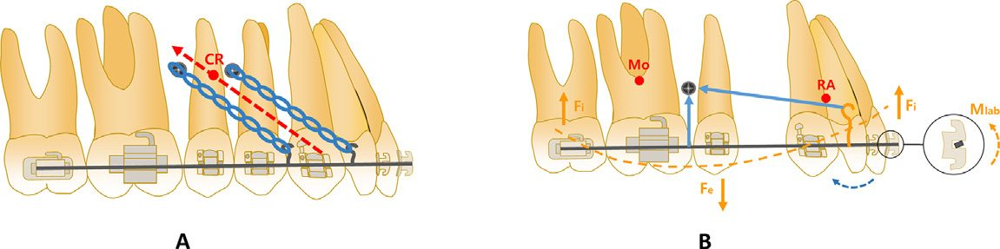
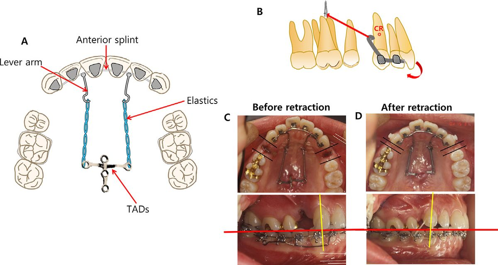
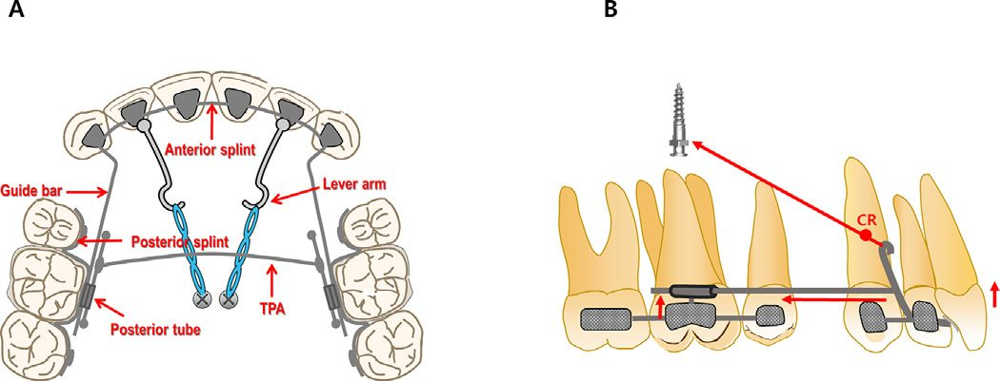
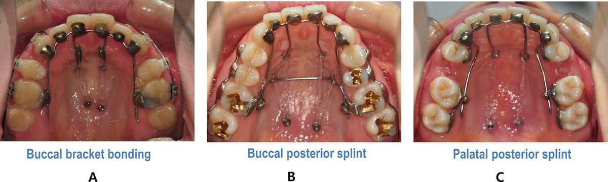
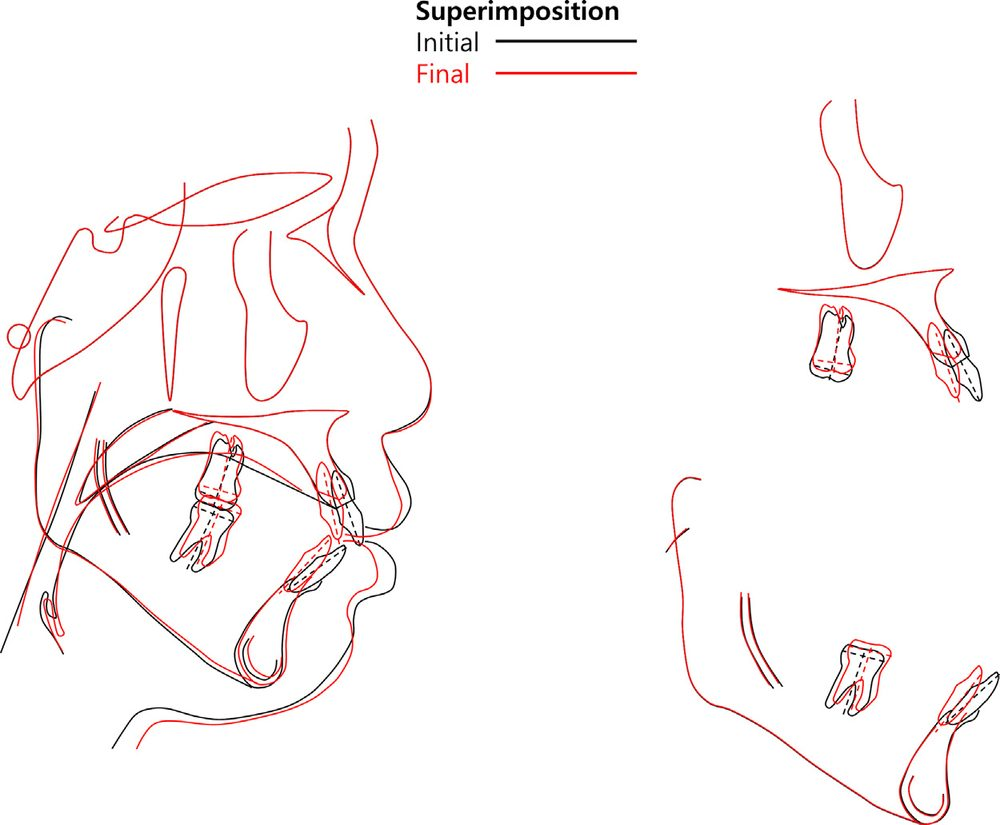
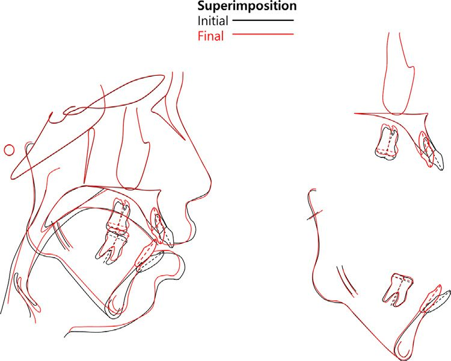
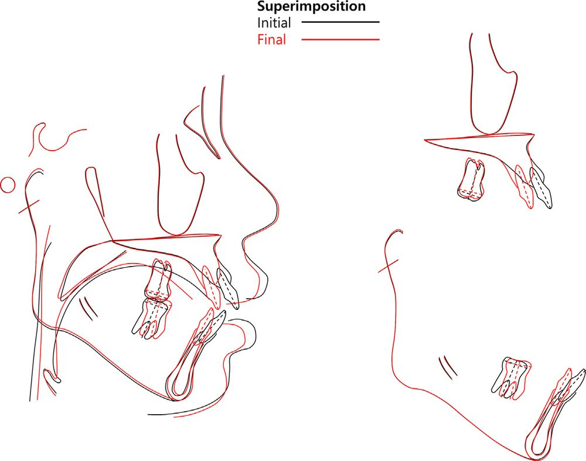

Why This Matters
Anterior open bite in an adult is one of the least forgiving problems in orthodontics. It has no single cause — genetics, skeletal pattern, tongue and soft-tissue behaviour, and long-standing habits all feed into it — and whatever you do to close it, relapse is always waiting. When the same patient also presents with lip protrusion and excessive incisor or gingival display, the treatment problem multiplies: you now need to retract the anterior segment, intrude it, and intrude the posterior segment, all at once, without the appliance itself becoming the patient’s next complaint.
The conventional answer has been surgery, or labial mechanics with buccal miniscrews. This paper proposes a third route: an antero-posterior lingual retractor (APLR) anchored to TADs in the midpalatal area, capable of retracting the anterior teeth and intruding the entire maxillary dentition simultaneously — while staying completely invisible from the front. The authors lay out the design, the force system behind it, and three treated cases showing how the same appliance behaves differently depending on lever-arm length, TAD height, tube angulation, and palatal vault depth.
The Problem With Labial Total-Intrusion Mechanics
Before getting to the APLR, the paper works through why the existing options are unsatisfying. In a patient with an open bite and a gummy smile, intruding only the molars is not enough — the whole maxillary dentition needs to come up, which produces something close to a total maxillary impaction and lets the mandible autorotate counterclockwise. That autorotation is the mechanism that closes the bite and brings the chin forward.
Earlier work achieved this with two miniscrews per buccal side, positioning the appliance so that the centre of resistance of the maxillary dentition sits between the two lines of force. Other groups used a transpalatal arch to stop the molar crowns from tipping buccally toward the screws, or an archwire with an accentuated curve of Spee combined with buccal TADs to cancel the unwanted extrusive component in the premolar region.
All of these work. All of them share two drawbacks: the hardware is highly visible at exactly the moment a protrusive, gummy-smile patient is most self-conscious about their smile, and anatomy in the buccal alveolus limits both how high you can place the TAD and how long you can make the lever arm — the two variables that actually govern the force vector.

Where Conventional Lingual Retractors Fall Short
A lingual retractor bonds attachment pads to the palatal surfaces of the anterior teeth, joined by a lingual arch into a single anterior splint. Lever arms of varying length are soldered to that splint, and elastic chain or coil springs run from the lever arms back to TADs in the midpalatal area or on the palatal slope.
The paper makes a good case for why this is attractive beyond aesthetics. First, retraction can start immediately — you are not stuck doing the usual align-and-level-then-retract sequence that flares the incisors labially before it brings them back, so round-tripping is minimised and the patient sees their chief complaint improving early. Second, friction is almost absent: the only metal-on-metal contact is between the guide bar and the posterior tube, so extraction space closes far more efficiently than it does sliding brackets along an archwire. Third, and most importantly, you can steer the force vector precisely by changing lever-arm length and TAD position.
The limitation is what happens when that vector is wrong. With the C-lingual retractor, if the line of action passes below the centre of resistance of the anterior segment, the segment rotates clockwise — you lose anterior torque and open a canine bite. The Double J retractor added torque springs on the lever arms to fight this. But both are anchored only to the anterior teeth. Neither can intrude the posterior segment, which is precisely what an open-bite, gummy-smile patient needs.

How the APLR Is Built
The single structural difference between the APLR and a conventional lingual retractor is that the APLR also grips the posterior teeth. That one change is what converts it from an anterior-retraction device into a whole-arch intrusion device.
- The anterior segment is essentially unchanged: pads on the palatal surfaces of the anterior teeth, joined into a splint, with lever arms soldered on.
- 0.036-in stainless steel guide bars are soldered to the lever arm or the front attachment pad and run posteriorly, passing through a tube on the posterior segment.
- A posterior splint is bonded to the palatal surfaces of the second premolar and the first and second molars, reinforcing the anchor unit.
- A posterior tube is soldered at the first molar for the guide bar to slide through. Two tubes can be added per side if a TPA is being used.
- If the posterior teeth themselves need intrusion or torque control, a hook can be soldered to the TPA.

The Biomechanics — What Each Variable Actually Controls
This is the most clinically useful part of the paper. Rather than presenting the APLR as a fixed recipe, the authors treat it as a set of dials, each with a predictable effect:
- Lever-arm length and TAD height together set the line of action. If that line passes under the centre of resistance of the anterior teeth, you get retraction with tipping. If it passes through the CR, you get bodily movement. Bodily retraction therefore demands longer lever arms and TADs placed higher.
- In hyperdivergent Class II patients with open bite and a gummy smile, TADs must sit higher than the lever-arm hook — otherwise the total intrusion component simply is not generated.
- The guide bar controls the retraction vector and protects anterior torque. Because the bar is soldered to the anterior splint and constrained by the posterior tube, it prevents the anterior segment from rotating as it retracts.
- Posterior tube angulation is the intrusion dial. A tube parallel to the occlusal plane produces bodily movement of the anterior teeth; tipping the tube distally increases the amount of anterior intrusion. This is the cheapest, most direct way to tune vertical control in gummy-smile cases.
- Non-parallel force and guide bar generates posterior intrusion. When the APLR force direction and the guide bar are not parallel, an intrusive component appears in the posterior segment — and total intrusion of the maxillary dentition is what rotates the mandible counterclockwise and closes the open bite.
The Posterior Segment Has to Behave as One Unit
The paper is emphatic about a failure mode that is easy to overlook. If the posterior dentition is not splinted into a single unit, the intrusive force is delivered only to the first molar — the one tooth the posterior tube happens to be bonded to. That tooth intrudes in isolation and everything else stays put.
Three acceptable ways to connect the posterior segment are described: bonding buccal brackets or tubes from the canine back and engaging a heavy rectangular segmental archwire; bonding a posterior splint to the buccal surfaces; or bonding a posterior splint to the palatal surfaces. There is also a related caution — because the intrusive load reaches the posterior teeth only through their palatal surfaces, some palatal tipping is expected, and a TPA is the standard countermeasure.

The Mandibular Molars Can Undo Your Work
One more mechanism deserves attention, because it quietly limits how much you get back for the intrusion you achieve. As the maxillary dentition intrudes, the mandibular molars have room to extrude compensatorily — and every millimetre of that compensatory extrusion cancels part of the mandibular autorotation you were counting on. The risk is highest exactly where these patients live: steep occlusal planes and high mandibular plane angles. If you expect it, plan for it — mandibular posterior TADs are the straightforward answer. The three cases below show this playing out very clearly.
Case 1 — Long Lever Arms, Deep Palatal Vault
A 25-year-old woman presented with lip protrusion and anterior open bite, a convex profile with a retrusive chin, a gummy smile and a flat smile arc. Cephalometrics showed a skeletal Class II hyperdivergent pattern (ANB 7.2°, SN-GoMe 42.9°) with normally inclined maxillary incisors (U1-FH 114.1°) and proclined mandibular incisors (IMPA 104.1°). She specifically requested a less visible appliance and early improvement of her protrusion.
Treatment involved maxillary first premolar extraction plus removal of poor-condition mandibular first molars and a supernumerary tooth. Because bodily retraction was wanted, roughly 15 mm lever arms were soldered to both canine pads and the posterior tube was tipped distally to boost anterior intrusion. TADs went into the midpalatal suture; the patient’s deep palatal vault meant the posterosuperior force vector produced a strong intrusive component. Space closure was essentially complete twelve months after APLR delivery; total treatment ran 28 months.
Outcome: lip protrusion, open bite and gummy smile all fully resolved with a consonant smile arc. Superimposition showed relatively bodily retraction (U1-FH 112°), 1.0 mm of maxillary anterior intrusion and 2.5 mm of maxillary molar intrusion. But the mandibular molars extruded 1.5 mm compensatorily — so counterclockwise rotation fell short of expectation (SN-GoMe 42.1°) and ANB barely moved (6.8°).

Case 2 — Short Lever Arms, and the Difference Mandibular TADs Make
A 24-year-old man with lip protrusion and AOB, a retrognathic mandible, gummy smile, lip incompetency and moderate crowding. Skeletal Class II hyperdivergent, notably more severe vertically than Case 1 (ANB 6.3°, SN-GoMe 52.7°), with proclined incisors in both arches and bilateral condylar resorption visible on the panoramic radiograph. Surgery was offered as the primary option and declined.
Maxillary second premolars and mandibular first premolars were extracted. Here short lever arms were used, deliberately setting the line of force below the CR to retract with controlled tipping. Posterior tubes were again tipped distally, a TPA guarded against palatal tipping, and midpalatal TADs provided anchorage. Critically, additional TADs were placed between the mandibular first and second molars — both to help retract the mandibular incisors and specifically to block the compensatory extrusion that had limited Case 1. Power chain between the midpalatal TADs and the TPA added extra molar intrusion. Total treatment: 29 months.
The contrast with Case 1 is the point of the case. Retraction with controlled tipping (U1-FH 107.1°), 1.5 mm anterior and 2.5 mm molar intrusion — but no compensatory extrusion of the mandibular molars. The mandible rotated significantly counterclockwise (SN-GoMe 50.1°) and ANB dropped to 5.0°. Despite the history of degenerative arthritis, no further condylar resorption occurred.

Case 3 — When the Palatal Vault Is Shallow
A female patient with lip protrusion and AOB, convex profile, retrusive chin, lip incompetency, and 4–5 mm lip protrusion relative to the E-line. Skeletal Class II hyperdivergent (ANB 7.0°, SN-GoMe 43.3°), normally inclined maxillary incisors (U1-FH 118.0°), proclined mandibular incisors (IMPA 97.8°).
Maxillary first premolars, third molars and mandibular second premolars were extracted for a Class I molar relationship. The APLR was bonded after aligning the six maxillary anterior teeth. Bodily retraction was the goal, so long lever arms of about 17 mm were soldered between the central and lateral incisors so the force would pass close to the CR. Because less anterior intrusion was needed here, the posterior tube was left parallel to the occlusal plane rather than tipped distally — a direct demonstration of the tube-angulation dial being used in the opposite direction from Case 1. Treatment ran 27 months.
Results: protrusion and open bite fully resolved, midline in harmony with the facial midline, improved profile and mentalis strain. Superimposition showed relatively bodily retraction (U1-FH 113.0°) with only mild intrusion — 0.5 mm anterior, 1.5 mm molar — and 0.5 mm of compensatory mandibular molar extrusion. Counterclockwise rotation was slight (SN-GoMe 42.5°), producing an anterosuperior shift of menton and a small reduction in lower anterior facial height, with ANB essentially unchanged at 6.3°. The authors are explicit that greater autorotation would have required actively controlling mandibular first molar extrusion. Her shallow palatal vault is offered as the reason the intrusive force stayed relatively small — anatomy, not technique, set the ceiling.

Key Findings
- The APLR does two jobs at once. Anterior retraction and total maxillary intrusion from a single invisible appliance, in patients who would otherwise be candidates for surgery or highly visible labial mechanics.
- Lever-arm length plus TAD height decide tipping vs bodily movement. Line of action under the CR → controlled tipping; through the CR → bodily retraction, which needs longer arms and higher TADs.
- Posterior tube angulation is the vertical-control dial. Parallel to the occlusal plane for bodily movement; tipped distally for more anterior intrusion.
- The posterior segment must be splinted as one unit — otherwise intrusive force is wasted on the single molar carrying the tube. A TPA should accompany it to limit palatal tipping.
- Palatal vault depth caps what is achievable. Deep vaults allowed a stronger intrusive vector (Cases 1 and 2); the shallow vault in Case 3 produced markedly less intrusion for comparable mechanics.
- Compensatory mandibular molar extrusion is the main thief of autorotation. Case 2 — the only case with mandibular posterior TADs — was the only one with no compensatory extrusion, and the only one with meaningful counterclockwise rotation and ANB reduction.
- Friction is minimal and round-tripping is avoided, since retraction begins immediately rather than after conventional levelling.
What This Means for Practice
For a digital workflow, the value here is that every APLR variable the authors identify — lever-arm length, TAD position and height, guide-bar path, posterior tube angulation, splint extent — is a design parameter that can be planned on a virtual setup and CBCT before anything is soldered. This appliance is unusually well suited to CAD design and digital transfer precisely because its behaviour is so sensitive to a handful of measurable geometric relationships. Getting a 15 mm lever arm and a distally tipped tube right by eye at the chair is difficult; getting them right on a planned setup is not.
The practical checklist the paper leaves you with, when applying an APLR: lever-arm length, TAD vertical position, posterior tube angulation, choice of posterior splint method, use of a TPA, depth of the palatal vault, and a deliberate plan for compensatory extrusion of the mandibular molars.
ORIGINAL SOURCE
Download the full published paper for complete methodology, tables, and references.
Download Full Paper (PDF)